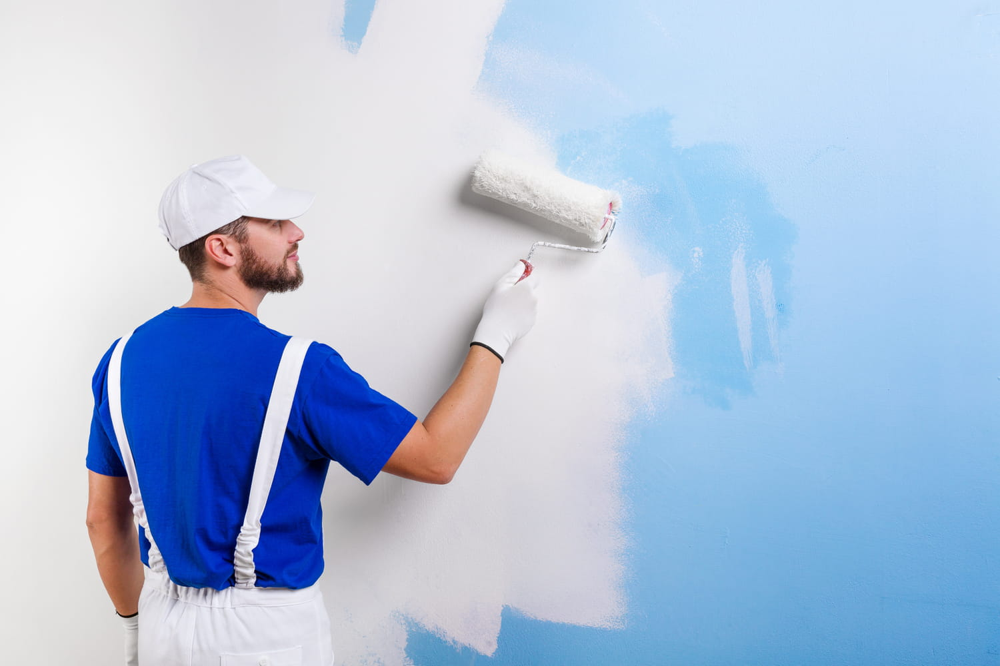

Contact Us +212-623-642-980 | saissizakaria0@gmail.com
OUR OUTSTANDING SERVICES
What We Offer!
- Pour relooker et valoriser votre bien immobilier, pour rénover suite à un dégât des eaux ou simplement pour rafraîchir et décorer votre espace de vie, plusieurs revêtements muraux sont possibles.
- La peinture, pose de papier-peint, de toile à peindre (nous déconseillons la toile de verre, étant nocive pour votre qualité d’air intérieur) d’enduits décoratifs et béton ciré.
- Votre artisan peintre professionnel réalise la rénovation et décoration d’intérieur dans les Yvelines, (Maisons-Laffitte, Triel-Sur-Seine, Mareil-Marly) la préparation de votre support (étape primordiale) avec enduis et plâtre avant sous couche et mise en peinture des murs et plafonds dans toutes les pièces de la maison.
|
 |
------------
Our Department
- Le ravalement de façades n’est pas qu’une mise en valeur et un embellissement de l’aspect extérieur du bâtiment.
- Il est aussi obligatoire tous les 10 ans afin de réaliser des travaux de rénovation de façade, comme le nettoyage et réparation de fissures à l’enduit fibré, afin de garantir votre confort thermique.
- Notre entreprise spécialisée intervient pour rénover et ravaler vos murs extérieurs avec des peintures de façade hydrofuges mais aussi l’ensemble des travaux de peintures extérieures, boiseries, dessous de toit, portails, portillons, grilles, volets et persiennes. La peinture et lasure utilisées sont résistantes aux UV et intempéries.
|
|